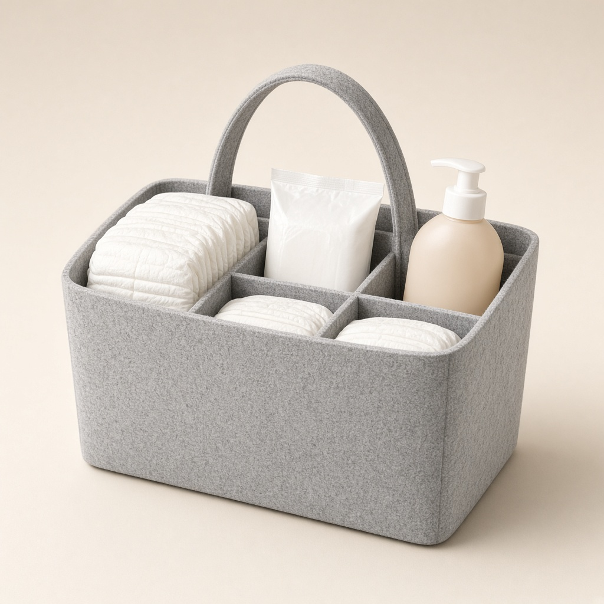
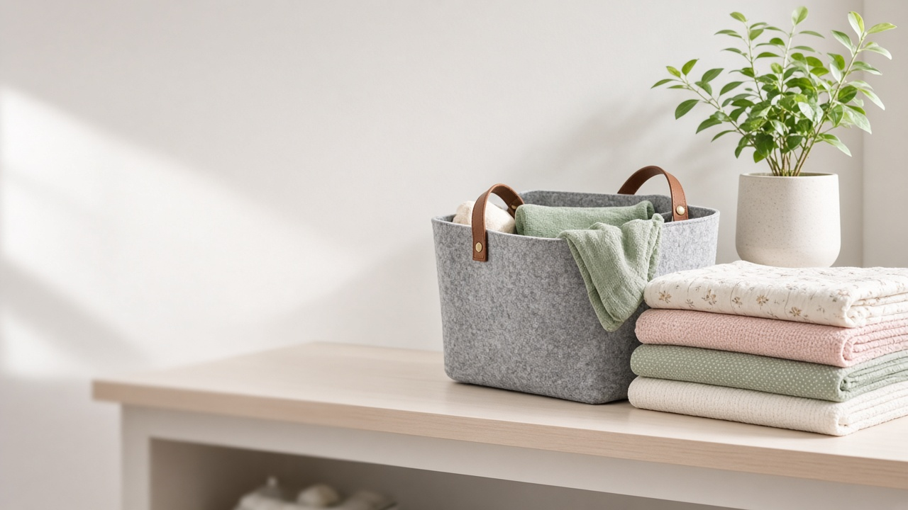

Felt Diaper Caddy
$22.99
- Keeps diapers, wipes and creams in one portable spot
- Removable dividers — customize the compartments
- Soft, sturdy felt that holds its shape
- Carry handle for easy room-to-room changes
🚚 Ships in 3–7 business days from our US warehouse. Free US shipping on orders over $35.
Description
Diaper changes go smoother when everything is in reach. Our Felt Diaper Caddy organizes diapers, wipes, lotions and small essentials in a soft, neutral basket that looks at home on a changing table, dresser, or car seat. Approx. 15 × 9 × 7 in. Spot clean only.
FAQ
How long does shipping take?
Orders ship from our US warehouse and arrive in 3–7 business days. You'll get a tracking number by email.
Can I return it?
Yes — unused items can be returned within 30 days of delivery. See our Returns Policy.
How do I clean it?
Spot clean with a damp cloth and mild soap; air dry.
Are the dividers removable?
Yes, the inner dividers can be removed or repositioned.